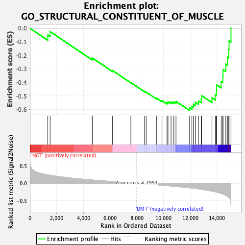
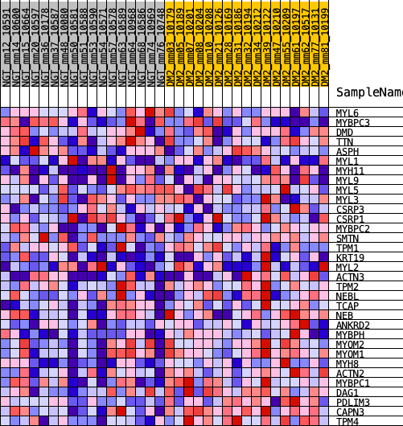
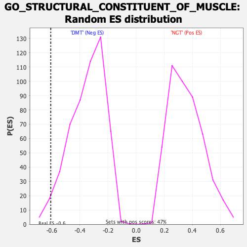

| | | Dataset | Diabetes_collapsed_symbols.Diabetes.cls#NGT_versus_DMT |
| Phenotype | Diabetes.cls#NGT_versus_DMT |
| Upregulated in class | DMT |
| GeneSet | GO_STRUCTURAL_CONSTITUENT_OF_MUSCLE |
| Enrichment Score (ES) | -0.60850024 |
| Normalized Enrichment Score (NES) | -1.7385801 |
| Nominal p-value | 0.02268431 |
| FDR q-value | 1.0 |
| FWER p-Value | 0.952 |
Table: GSEA Results Summary

Fig 1: Enrichment plot: GO_STRUCTURAL_CONSTITUENT_OF_MUSCLE
Profile of the Running ES Score & Positions of GeneSet Members on the Rank Ordered List
| PROBE | DESCRIPTION
(from dataset) | GENE SYMBOL | GENE_TITLE | RANK IN GENE LIST | RANK METRIC SCORE | RUNNING ES | CORE ENRICHMENT | | 1 | MYL6 | na | | | 1341 | 0.246 | -0.0504 | No |
| 2 | MYBPC3 | na | | | 1514 | 0.234 | -0.0250 | No |
| 3 | DMD | na | | | 4669 | 0.096 | -0.2198 | No |
| 4 | TTN | na | | | 6188 | 0.050 | -0.3129 | No |
| 5 | ASPH | na | | | 7559 | 0.012 | -0.4022 | No |
| 6 | MYL1 | na | | | 8586 | -0.017 | -0.4677 | No |
| 7 | MYH11 | na | | | 8702 | -0.020 | -0.4722 | No |
| 8 | MYL9 | na | | | 9469 | -0.044 | -0.5163 | No |
| 9 | MYL5 | na | | | 9888 | -0.057 | -0.5351 | No |
| 10 | MYL3 | na | | | 10265 | -0.070 | -0.5491 | No |
| 11 | CSRP3 | na | | | 10338 | -0.072 | -0.5425 | No |
| 12 | CSRP1 | na | | | 10566 | -0.080 | -0.5449 | No |
| 13 | MYBPC2 | na | | | 10774 | -0.088 | -0.5449 | No |
| 14 | SMTN | na | | | 10936 | -0.093 | -0.5409 | No |
| 15 | TPM1 | na | | | 11953 | -0.131 | -0.5878 | Yes |
| 16 | KRT19 | na | | | 12125 | -0.138 | -0.5773 | Yes |
| 17 | MYL2 | na | | | 12243 | -0.145 | -0.5623 | Yes |
| 18 | ACTN3 | na | | | 12385 | -0.151 | -0.5479 | Yes |
| 19 | TPM2 | na | | | 12617 | -0.162 | -0.5377 | Yes |
| 20 | NEBL | na | | | 12821 | -0.173 | -0.5239 | Yes |
| 21 | TCAP | na | | | 12848 | -0.175 | -0.4981 | Yes |
| 22 | NEB | na | | | 13628 | -0.225 | -0.5145 | Yes |
| 23 | ANKRD2 | na | | | 13879 | -0.245 | -0.4925 | Yes |
| 24 | MYBPH | na | | | 13965 | -0.254 | -0.4580 | Yes |
| 25 | MYOM2 | na | | | 13981 | -0.256 | -0.4187 | Yes |
| 26 | MYOM1 | na | | | 14318 | -0.293 | -0.3949 | Yes |
| 27 | MYH8 | na | | | 14438 | -0.308 | -0.3541 | Yes |
| 28 | ACTN2 | na | | | 14458 | -0.312 | -0.3061 | Yes |
| 29 | MYBPC1 | na | | | 14666 | -0.347 | -0.2652 | Yes |
| 30 | DAG1 | na | | | 14785 | -0.374 | -0.2140 | Yes |
| 31 | PDLIM3 | na | | | 14883 | -0.399 | -0.1574 | Yes |
| 32 | CAPN3 | na | | | 14910 | -0.412 | -0.0942 | Yes |
| 33 | TPM4 | na | | | 15052 | -0.658 | 0.0002 | Yes |
Table: GSEA details [plain text format]

Fig 2: GO_STRUCTURAL_CONSTITUENT_OF_MUSCLE
Blue-Pink O' Gram in the Space of the Analyzed GeneSet

Fig 3: GO_STRUCTURAL_CONSTITUENT_OF_MUSCLE: Random ES distribution
Gene set null distribution of ES for GO_STRUCTURAL_CONSTITUENT_OF_MUSCLE